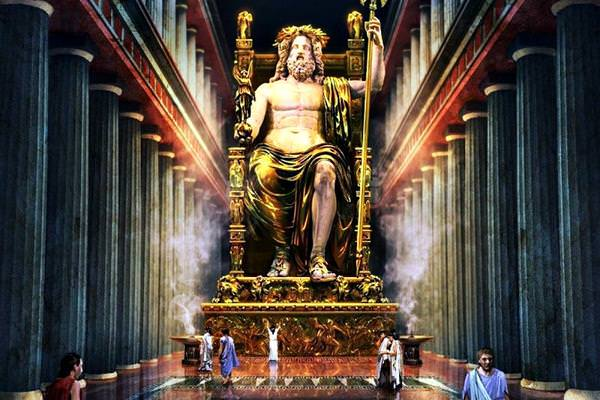

Zeus heykeli, M.Ö. 456 yılında Olimpos Dağı'nda inşâ edilen Zeus Tapınağı için Fidias tarafından yapılan ve tanrı Zeus'u oturur hâlde betimleyen devasa bir heykeldi. Fidias'ın M.Ö. 438 ile 430 yılları arasında yaptığı tahmin edilen 13 metre yüksekliğindeki görkemli eseri "Dünyanın Yedi Harikası" arasındadır.
Heykel altın ve fildişinden imâl edilmiştir. Zeus'un oturduğu taht, abanoz ağacından yapılmış, altın, fildişi ve değerli taşlardan kakmalar ile süslü hâliyle heykelin kendisinden daha etkileyiciydi. Heykel, Zeus'u sağ elinde zafer tanrıçası Nike ile, sol elinde ise değerli metallerden süslemeler ve bir kartal kakması ile bezeli bir asa tutarken betimlemekteydi. 